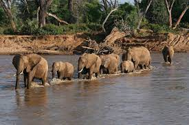
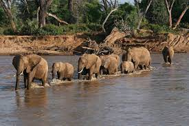
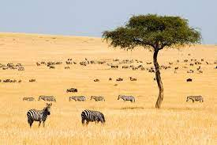
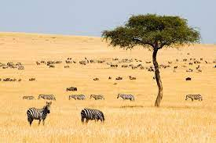

Happy trail is Kenya's largest locally owned travel management company.
Situated across 14 offices across Kenya, Happy travel agency offers award winning corporate travel management, industry leading traveltechnology solutions, leisure travel, and event management solutions.
 

 

Follow this link to see some travel destinations around Kenya. Happy travelling!
Other travel destinations in Kenya